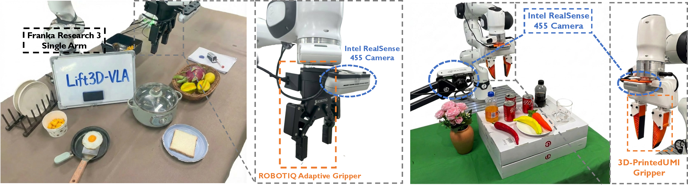
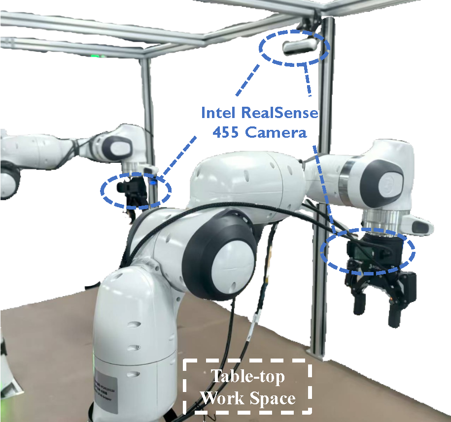

Lift3D-VLA: Lifting VLA Models to 3D Geometry and Dynamics-Aware Manipulation
Under Review


Under Review
Lift3D-VLA achieves significant improvements over prior VLA methods by equipping 2D VLA models with explicit 3D point cloud reasoning and temporally coherent action generation.

Overview. Unlike previous 3D VLA methods that encode point clouds with newly introduced 3D encoders or by projecting features between 2D and 3D spaces, Lift3D-VLA equips 2D VLA models with explicit 3D reasoning and temporally coherent action generation. Across 22 simulated and 10 real-world tasks, Lift3D-VLA achieves state-of-the-art results.
Recently, Vision–Language–Action (VLA) models have demonstrated strong generalization across diverse tasks. However, effective robotic manipulation in physical environments fundamentally requires geometric understanding and spatial reasoning. While some VLA approaches attempt to incorporate 3D information, they are constrained by limited data availability and geometric information loss in current 3D encoding pipelines, and fail to jointly capture 3D geometry and temporally structured actions in dynamic environments. To address these limitations, we introduce Lift3D-VLA, a unified VLA framework that equips models with explicit 3D point cloud reasoning and enables temporally coherent action generation. First, building upon our previous work Lift3D, an enhanced 2D model-lifting strategy is proposed to geometrically align 3D points with pretrained 2D positional embeddings, enabling direct point-cloud encoding within the VLA vision encoder while minimizing spatial information loss. Based on explicit 3D inputs, we propose Geometry-Centric Masked Autoencoding (GC-MAE), a dual-objective self-supervised framework that reconstructs the current point cloud while predicting its future geometric evolution, allowing the 2D vision encoder to internalize both 3D structure and physical dynamics. We further design layer-wise temporal action modeling, which leverages multiple layers of the LLM to collaboratively predict action chunks, enabling temporally consistent predictions.

Lift3D-VLA Framework. (a) Following Lift3D, we perform virtual projection to align 3D points with pretrained 2D positional embeddings, constructing geometry-aligned 3D PEs. (b) Stage 1: GC-MAE reconstructs the current point cloud while predicting its future geometric evolution, enabling the model to capture physical dynamics. (c) Stage 2: Layer-wise temporal action modeling leverages intermediate and deep LLM layers to generate temporally consistent action sequences.
Lift3D-VLA is evaluated on 22 tasks across MetaWorld and RLBench benchmarks in multi-task settings.
| Model | Assembly | Bin Pick | Box Close | Button | Dial | Drawer | Hammer | Hand Ins. | Peg | Push | Reach | Shelf | Sweep | Mean S.R. |
|---|---|---|---|---|---|---|---|---|---|---|---|---|---|---|
| OpenVLA | 90 | 70 | 70 | 100 | 90 | 100 | 50 | 70 | 80 | 50 | 30 | 70 | 90 | 73.9 |
| π0.5 | 100 | 85 | 50 | 100 | 45 | 80 | 75 | 45 | 65 | 55 | 45 | 75 | 60 | 67.7 |
| SpatialVLA | 75 | 65 | 50 | 90 | 65 | 65 | 85 | 45 | 55 | 35 | 65 | 40 | 70 | 61.9 |
| 3DS-VLA | 75 | 100 | 45 | 90 | 95 | 100 | 90 | 70 | 75 | 50 | 60 | 60 | 90 | 76.9 |
| Lift3D-VLA (Ours) | 100 | 100 | 64 | 100 | 100 | 100 | 96 | 88 | 100 | 84 | 72 | 52 | 84 | 87.7 |
| Model | Close Box | Close Laptop | Toilet Seat | Sweep | Close Fridge | Umbrella | Frame | Wine Rack | Water Plants | Mean S.R. |
|---|---|---|---|---|---|---|---|---|---|---|
| OpenVLA | 60 | 35 | 75 | 55 | 85 | 30 | 15 | 20 | 5 | 42.2 |
| π0.5 | 90 | 95 | 85 | 75 | 100 | 10 | 80 | 75 | 35 | 71.7 |
| SpatialVLA | 80 | 70 | 85 | 20 | 80 | 25 | 40 | 15 | 30 | 49.4 |
| 3DS-VLA | 88 | 96 | 96 | 16 | 92 | 80 | 52 | 88 | 36 | 71.6 |
| Lift3D-VLA (Ours) | 95 | 80 | 95 | 95 | 90 | 65 | 75 | 95 | 50 | 82.2 |
Lift3D-VLA outperforms the best prior VLA by +10.8% on MetaWorld and +10.5% on RLBench, and attains the highest success on 6 of 9 RLBench tasks.
Lift3D-VLA is evaluated on 8 real-world manipulation tasks including both single-arm and dual-arm configurations, outperforming the strongest real-world baseline by 4 percentage points.


Long-horizon tasks such as repeatedly scooping eggs from a pan while continuously adapting to dynamic environmental changes demonstrate Lift3D-VLA's robustness to out-of-distribution perturbations in real-world deployment.
Lift3D-VLA successfully completes real-world manipulation tasks including pouring water and stacking objects.
Pour Water
Stack Cola
Lift3D-VLA generalizes robustly to unseen objects, backgrounds, and lighting conditions across multiple tasks.
Unseen Background
Unseen Object
Unseen Lighting
Unseen Background
Unseen Object
Unseen Lighting
@article{lift3dvla2024,
title = {Lift3D-VLA: Lifting VLA Models to 3D Geometry and Dynamics-Aware Manipulation},
author = {Anonymous Authors},
journal = {Under Review},
year = {2024},
}